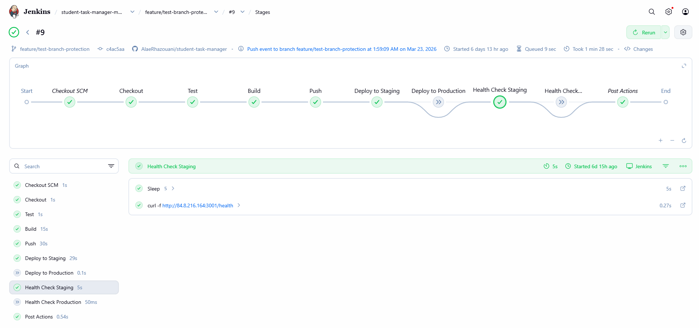

CI/CD Pipeline & Monitoring — Student Task Manager
Built a full Jenkins CI/CD pipeline for a 3-microservice Flask + PostgreSQL app containerized with Docker Compose and deployed on Oracle Cloud. The pipeline automates build, pytest testing, GHCR image push, and SSH deployment — with automatic rollback on failure. Includes staging/production separation, Discord notifications, and real-time Prometheus + Grafana monitoring with custom dashboards and alerts.